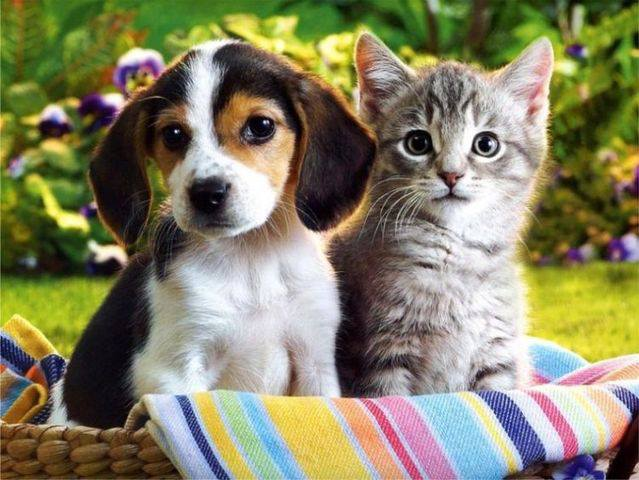

Galerie Foto

Prietenii fideli ai omului.Cine spune ca nu se pot intelege?

Un animal de companie si totodata un amic pe cinste cu care sa schimbi replici la bine si la rau.
Betta splendens unul dintre cele mai exotice exemplare intalnite in acvariile comune cu apa dulce.Nelipsit din casele iubitorilor de pesti.

Prietenia mai presus de orice!
Un splendid acvariu de apa dulce,frumos amejat.Un biosistem perfect ce impresioneaza prin diversitatea speciilor.
�iiiiii.... ce parere aveti de siteul nostru?

Revenire la pagina initiala